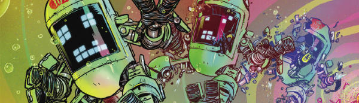

An anthology series allowing for one-off tales in three parts.
Art by Pye Parr
| Story Title | Parts | Pages | w indicates a wraparound coverCovers | Year(s) | Issues | Writer | Artist | Colourist | Letterer |
|---|---|---|---|---|---|---|---|---|---|
| The Silver-Tongued Exploits of Cosmo Nibs | 3 | 15 | 0 | 2011 | 1740-1742 | T.C. Eglington | John McCrea | Andrew Elder | Annie Parkhouse |
| Six Brothers | 3 | 16 | 0 | 2011 | Reprints: M371 (supplement)1743-1745 | Alec Worley | Michael Dowling | <-- | Annie Parkhouse |
| Wolves | 3 | 16 | 1747: Clint Langley 1 | 2011 | Reprints: M382 (supplement)1746-1748 | Arthur Wyatt | Steve Yeowell | <-- | Annie Parkhouse |
| 1947 | 3 | 15 | 0 | 2012 | Reprints: M382 (supplement)1789-1791 | Kek-W | Michael Dowling | <-- | Ellie de Ville |
| 15 | 3 | 15 | 1798: Jon Davis‑Hunt 1 | 2012 | Reprints: M371 (supplement)1797-1799 | Tom Taylor | Jon Davis-Hunt | <-- | Ellie de Ville |
Linked to Survival GeeksSurvival Geeks | 3 | 15 | 0 | 2013 | 1824-1826 | Emma Beeby Gordon Rennievarious | Neil Googe | Gary Caldwell | Annie Parkhouse |
| The Ghostship Mathematica | 3 | 15 | 0 | 2013 | Reprints: M371 (supplement)1827-1829 | David Baillie | Inaki Miranda | Eva de la Cruz | Annie Parkhouse |
| Gunheadz | 3 | 15 | 1830: Maurice Aitken [Boo Cook] 1 | 2013 | Reprints: M371 (supplement)1830-1832 | T.C. Eglington | Boo Cook | <-- | Annie Parkhouse |
| Rewind | 3 | 15 | 0 | 2013 | Reprints: M382 (supplement)1856-1858 | Robert Murphy | Jesus Redondo | Eva de la Cruz | 1: Annie Parkhouse 2‑3: Ellie De Ville various |
| After the Vengeance | 3 | 15 | 0 | 2014 | 1871-1873 | David Baillie | Jon Davis-Hunt | Gary Caldwell | Ellie de Ville |
| Colony | 3 | 15 | 0 | 2014 | Reprints: M382 (supplement)1880-1882 | Kek-W | Vince Locke | Adam Brown | Ellie de Ville |
| In Seconds Flat | 3 | 15 | 0 | 2014 | Reprints: M403 (supplement)1883-1885 | Eddie Robson | Andrew Currie | Abigail Ryder | Ellie de Ville |
| Voodoo Planet | 3 | 15 | 0 | 2014 | Reprints: M383 (supplement)1888-1890 | Guy Adams | PJ Holden | Steven Dutton | Simon Bowland |
| Station to Station | 3 | 15 | 0 | 2015 | Reprints: M403 (supplement)1918-1920 | Eddie Robson | Darren Douglas | <-- | Ellie de Ville |
| 0.01 | 3 | 15 | 0 | 2015 | 1921-1923 | Eddie Robson | INJ Culbard | <-- | Ellie de Ville |
| Commercial Break | 3 | 15 | 0 | 2015 | 1931-1933 | Eddie Robson | Mike Collins | Gary Caldwell | Ellie de Ville |
| Apocalypse Anonymous | 3 | 15 | 0 | 2015 | Reprints: M403 (supplement)1945-1947 | Robert Murphy | Sean O'Conner | Abigail Bulmer | Annie Parkhouse |
| Repossession Orders | 3 | 15 | 0 | 2016 | 1973-1975 | Eddie Robson | Jake Lynch | <-- | Simon Bowland |
| Mindmine | 3 | 15 | 0 | 2016 | Reprints: M403 (supplement)1993-1995 | Rory McConville | Colin MacNeil | Peter Doherty | Simon Bowland |
Linked to MechastophelesMechastopheles | 3 | 15 | 2046: Karl Richardson 1 | 2017 | Reprints: M433‑S2045-2047 | Gordon Rennie Lawrence Rennievarious | Karl Richardson | <-- | Annie Parkhouse |
| The House of Gilded Peak | 3 | 15 | 0 | 2017 | 2058-2060 | Eddie Robson | Steven Austin | Gary Caldwell | Annie Parkhouse |
| Appetite | 3 | 15 | 0 | 2018 | 2093-2095 | James Peaty | Andrea Mutti | Eva de la Cruz | Ellie de Ville |
Linked to IntestinautsInfestinauts Are Go! | 3 | 16 | 0 | 2018 | 2106-2108 | Arthur Wyatt | Pye Parr | <-- | Pye Parr |
| The Scorched Zone | 3 | 16 | 0 | 2019 | 2112-2114 | Eddie Robson | Nick Brokenshire | Gary Caldwell | Ellie de Ville |
| Keeper of Secrets | 3 | 15 | 0 | 2019 | 2115-2117 | Robert Murphy | Steven Austin | Pippa Mather | Ellie de Ville |
| Tooth & Nail | 3 | 16 | 0 | 2019 | 2120-2122 | Andi Ewington | Staz Johnson | Abigail Bulmer | Simon Bowland |
| The Chimera | 3 | 15 | 0 | 2019 | 2131-2133 | James Peaty | Brian Corcoran | Matt Soffe | Annie Parkhouse |
| Red Road | 3 | 16 | 0 | 2019 | 2146-2148 | Andi Ewington | Ben Willsher | <-- | Simon Bowland |
| Saphir: Un Roman Fantastique | 3 | 18 | 0 | 2020 | 2197-2199 | Kek-W | David Roach | Peter Doherty | Simon Bowland |
| Nakka of the S.T.A.R.S | 3 | 18 | 2222: Brendan McCarthy & Len O'Grady (C) 1 | 2021 | 2222-2224 | Roger Langridge | Brendan McCarthy | Len O'Grady Brendan McCarthy various | Annie Parkhouse |
| Chorus & the Ring | 3 | 15 | 2226: Mike Collins & Dylan Teague (C) 1 | 2021 | 2222-2224 | James Peaty | Mike Collins | Dylan Teague | Annie Parkhouse |
Linked to IntestinautsIntestinauts: Symbiotic Love Triangle | 3 | 16 | 2230: Pye Parr 1 | 2021 | 2230-2232 | Arthur Wyatt | Pye Parr | <-- | Pye Parr |
| year | episodes | pages |
| 2001 | 0 | 0 |
| 2002 | 0 | 0 |
| 2003 | 0 | 0 |
| 2004 | 0 | 0 |
| 2005 | 0 | 0 |
| 2006 | 0 | 0 |
| 2007 | 0 | 0 |
| 2008 | 0 | 0 |
| 2009 | 0 | 0 |
| 2010 | 0 | 0 |
| 2011 | 9 | 47 |
| 2012 | 6 | 30 |
| 2013 | 12 | 60 |
| 2014 | 12 | 60 |
| 2015 | 12 | 60 |
| 2016 | 6 | 30 |
| 2017 | 6 | 30 |
| 2018 | 6 | 31 |
| 2019 | 15 | 78 |
| 2020 | 3 | 18 |
| 2021 | 9 | 49 |